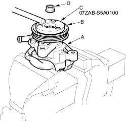
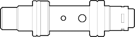
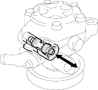

- Attachment, 32 x 35 mm, 07746-0010100
- Driver, 07749-0010000
- Pulley holder, 07ZAB-S5A0100
Disassembly
NOTE: Refer to the Exploded View as needed during the following procedure.
- Remove the power steering pump (see page 17-27).
- Drain the fluid from the pump.
- Hold the steering pump (A) a vice with soft jaws, hold the pulley (B) with the special tool (C), and remove the pulley nut (D) and pulley. Be careful not to damage the pump housing with the jaws of the vice.

- Remove the inlet joint and O-ring.
- Remove the flow control valve cap, O-ring, valve spring, and pressure control valve.
- Remove the pump housing cap, O-ring, and pump preload spring.
- Remove the pump cover, pump cover seal and O-ring.
- Pull out the roll pin.
- Remove the outer case, cam ring, rotor, vanes and side plate.
- Remove the rubber seal and slipper seal from the outer case.
- Remove the O-rings from the bottom of the housing.
- Remove the circlip, then remove the drive shaft by tapping the shaft end with the plastic hammer.
- Remove the seal from the pump housing.
- Check the pressure control valve for wear, burrs, and other damage to the edges of the grooves in the valve.

- Inspect the bore of the pressure control valve on the pump housing for scratches and wear.
- Slip the pressure control valve back in the pump housing, and check that it moves in and out smoothly. If OK, go to step 17; if not, replace the pump as an assembly. The pressure control valve is not available separately.
